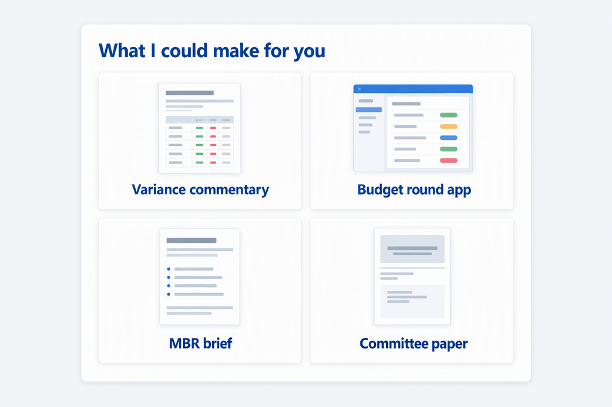
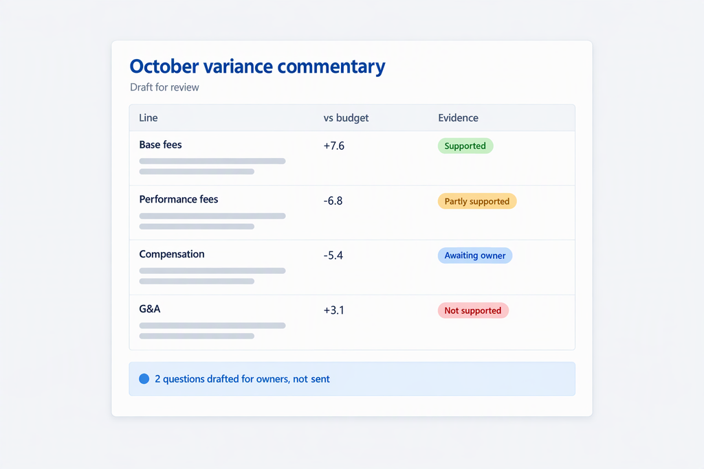
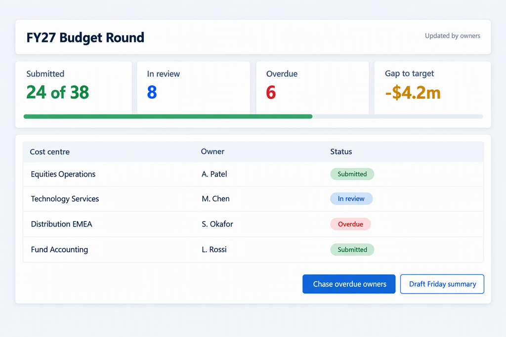

Cowork Cookbook: pictures
Pictures that the Launchpad plugin shows in Cowork cards. All people, organisations and figures shown are invented.
Used at the top of the welcome card.
assets/v1/launchpad-welcome-banner.png
What Launchpad could make for you: four kinds of work, each with a picture of the result.
assets/v1/launchpad-picture-menu.png
A draft commentary in which every line carries an evidence status.
assets/v1/launchpad-variance-commentary-example.png
An app that replaces a shared tracker and status emails.
assets/v1/launchpad-budget-round-app-mock.png